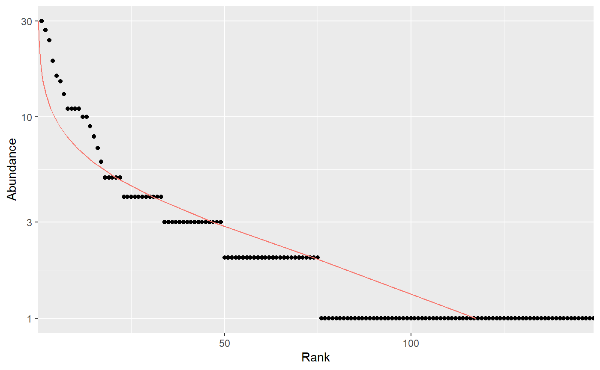
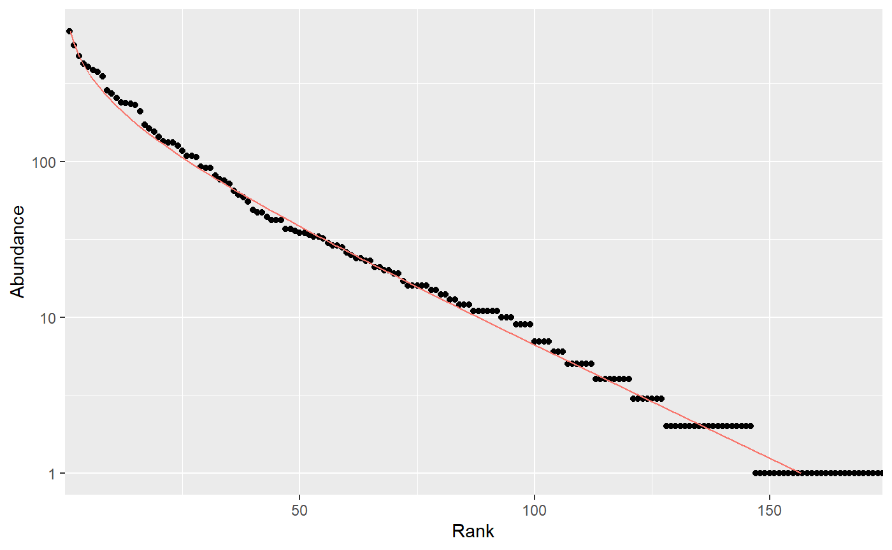
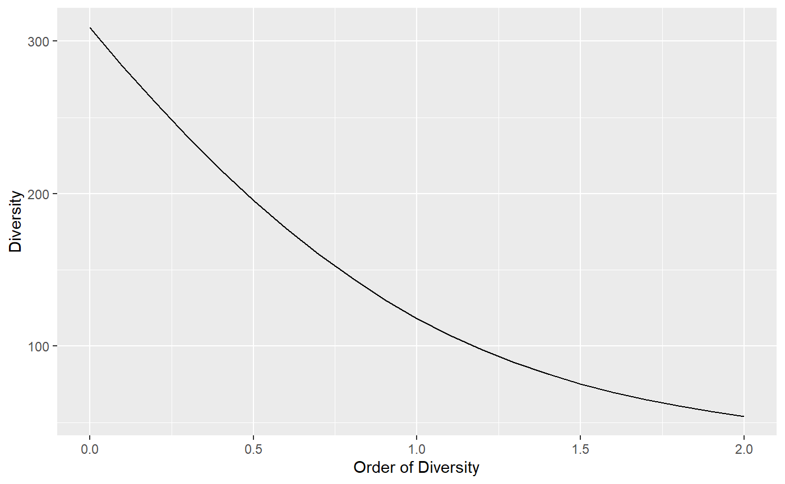
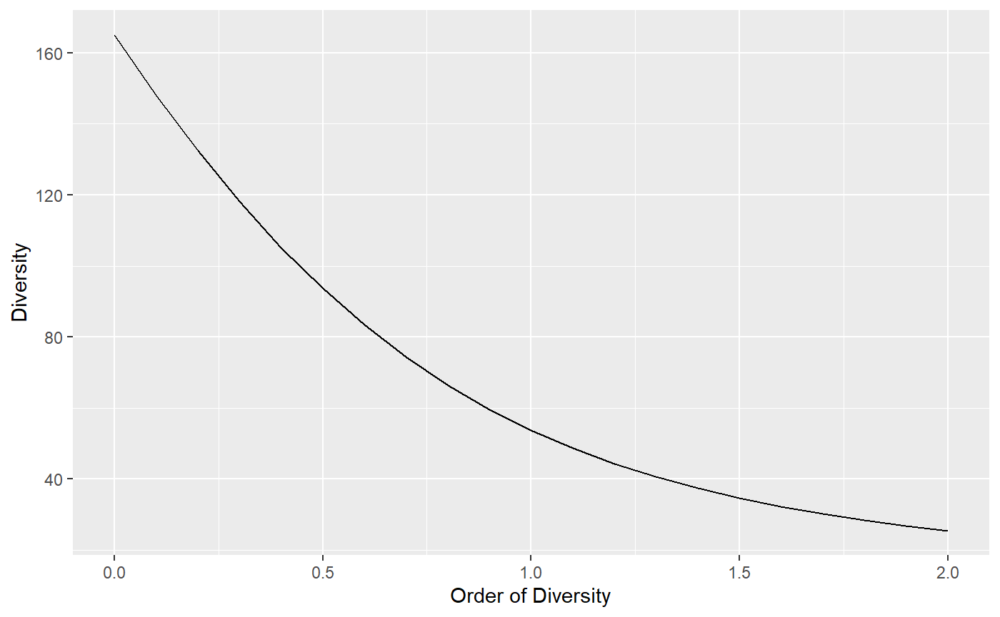
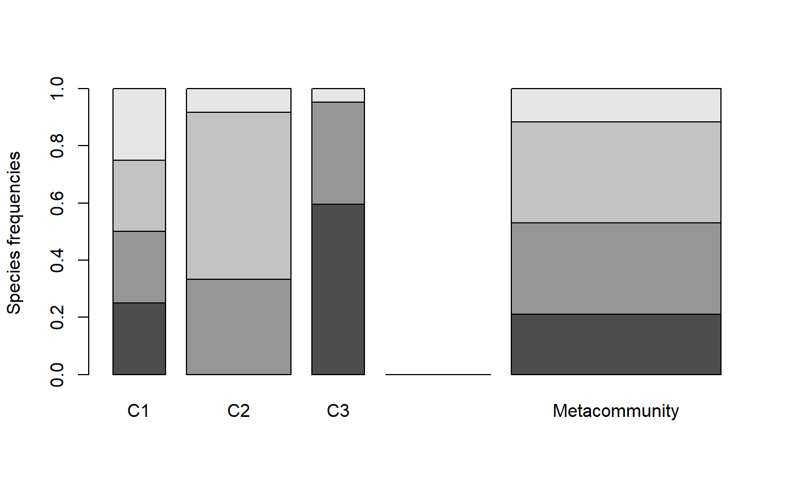
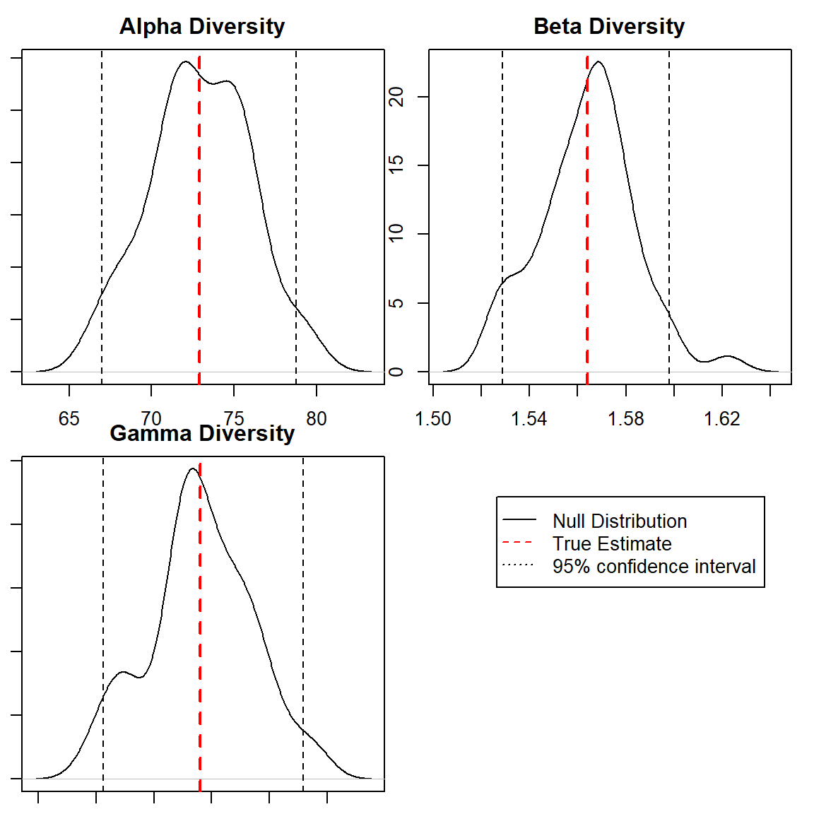
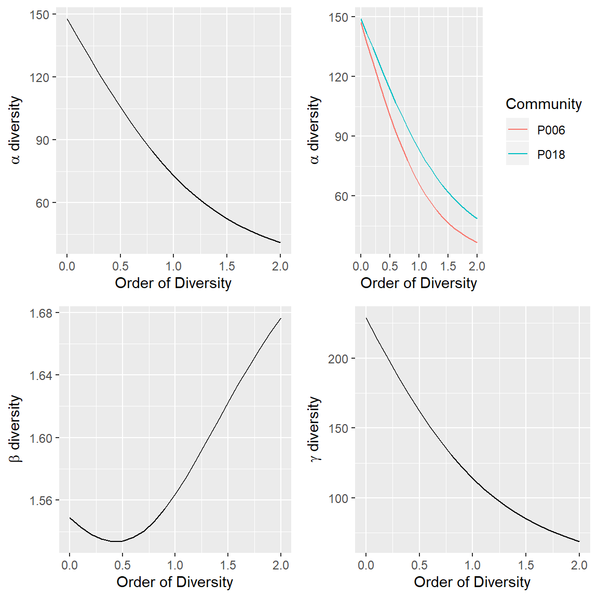

entropart is a package for R designed to estimate diversity based on HCDT entropy or similarity-based entropy. This is a short introduction to its use.
The entropart package allows estimating biodiversity according to the framework based on HCDT entropy, the correction of its estimation-bias (Grassberger 1988; Chao and Shen 2003; Chao and Jost 2015) and its transformation into equivalent numbers of species (Hill 1973; Jost 2006; Marcon et al. 2014). Estimation of diversity at arbitrary levels of sampling, requiring interpolation or extrapolation (Chao et al. 2014) is available
Phylogenetic or functional diversity (Marcon and Hérault 2015) can be estimated, considering phyloentropy as the average species-neutral diversity over slices of a phylogenetic or functional tree (S. Pavoine, Love, and Bonsall 2009).
Similarity-based diversity (Leinster and Cobbold 2012) can be used to estimate (Marcon, Zhang, and Hérault 2014) functional diversity from a similarity or dissimilarity matrix between species without requiring building a dendrogram and thus preserving the topology of species (Sandrine Pavoine, Ollier, and Dufour 2005; Podani and Schmera 2007).
The classical diversity estimators (Shannon and Simpson entropy) can be found in many R packages. vegetarian (Charney and Record 2009) allows calculating Hill numbers and partitioning them according to Jost’s framework. Bias correction is rarely available except in the EntropyEstimation (Cao and Grabchak 2014) package which provides the Zhang and Grabchak’s estimators of entropy and diversity and their asymptotic variance (not included in entropart).
Community data is a numeric vector containing abundances of species (the number of individual of each species) or their probabilities (the proportion of individuals of each species, summing to 1).
Example data is provided in the dataset paracou618. Let’s get the abundances of tree species in the 1-ha tropical forest plot #18 from Paracou forest station in French Guiana:
library("entropart")## Le chargement a nécessité le package : ggplot2data("Paracou618")
N18 <- Paracou618.MC$Nsi[, "P018"]The data in Paracou618.MC is a MetaCommunity, to be discovered later. N18 is a vector containing the abundances of 425 tree species, among them some zero values. This is the most simple and common format to provide data to estimate diversity. It can be used directly by the functions presented here, but it may be declared explicitely as an abundance vector to plot it, and possibly fit a well-known, e.g. log-normal (Preston 1948), distribution of species abundance (the red curve):
Abd18 <- as.AbdVector(N18)
autoplot(Abd18, Distribution="lnorm")
The parameters of the fitted distribution (here: mean and standard deviation) are returned by the function.
Abundance vectors can also be converted to probability vectors, summing to 1:
P18 <- as.ProbaVector(N18)The rCommunity function allows drawing random communities:
rc <- rCommunity(1, size=10000, Distribution = "lseries", alpha = 30)
autoplot(rc, Distribution="lseries")
The Whittaker plot of a random log-series (Fisher, Corbet, and Williams 1943) distribution of 10000 individuals simulated with parameter \(\alpha=30\) is produced.
The classical indices of diversity are richness (the number of species), Shannon’s and Simpson’s entropies:
Richness(P18)## None
## 149Shannon(P18)## None
## 4.421358Simpson(P18)## None
## 0.9794563When applied to a probability vector (created with as.ProbaVector or a numeric vector summing to 1), no estimation-bias correction is applied: this means that indices are just calculated by applying their definition function to the probabilities (that is the plugin estimator).
When abundances are available (a numeric vector of integer values or an object created by as.ProbaVector), several estimators are available (Marcon 2015) to address unobserved species and the non-linearity of the indices:
Richness(Abd18)## Jackknife 3
## 309Shannon(Abd18)## UnveilJ
## 4.772981Simpson(Abd18)## Lande
## 0.9814969The best available estimator is chosen by default: its name is returned.
Those indices are special cases of the Tsallis entropy (1988) or order \(q\) (respectively \(q=0,1,2\) for richness, Shannon, Simpson):
Tsallis(Abd18, q=1)## UnveilJ
## 4.772981Entropy should be converted to its effective number of species, i.e. the number of species with equal probabilities that would yield the observed entropy, called Hill (1973) numbers or simply diversity (Jost 2006).
Diversity(Abd18, q=1)## UnveilJ
## 118.2713Diversity is the deformed exponential of order \(q\) of entropy, and entropy is the deformed logarithm of of order \(q\) of diversity:
(d2 <- Diversity(Abd18,q=2))## UnveilJ
## 53.97842lnq(d2, q=2)## UnveilJ
## 0.9814741(e2 <-Tsallis(Abd18,q=2))## UnveilJ
## 0.9814741expq(e2, q=2)## UnveilJ
## 53.97842Diversity can be plotted against its order to provide a diversity profile. Order 0 corresponds to richness, 1 to Shannon’s and 2 to Simpson’s diversities:
DP <- CommunityProfile(Diversity, Abd18)
autoplot(DP)
If an ultrametric dendrogram describing species’ phylogeny (here, a mere taxonomy with family, genus and species) is available, phylogenetic entropy and diversity (Marcon and Hérault 2015) can be calculated:
summary(PhyloDiversity(Abd18,q=1,Tree=Paracou618.Taxonomy))## alpha or gamma phylogenetic or functional diversity of order 1
## of distribution Abd18
## with correction: Best
## Phylogenetic or functional diversity was calculated according to the tree
## Paracou618.Taxonomy
##
## Diversity is normalized
##
## Diversity equals: 53.73643With a Euclidian distance matrix between species, similarity-based diversity (Leinster and Cobbold 2012; Marcon, Zhang, and Hérault 2014) is available:
# Prepare the similarity matrix
DistanceMatrix <- as.matrix(Paracou618.dist)
# Similarity can be 1 minus normalized distances between species
Z <- 1 - DistanceMatrix/max(DistanceMatrix)
# Calculate diversity of order 2
Dqz(Abd18, q=2, Z)## Best
## 1.477898Profiles of phylogenetic diversity and similarity-based diversity are obtained the same way. PhyloDiversity is an object with a lot of information so an intermediate function is necessary to extract its $Total component:
sbDP <- CommunityProfile(Dqz, Abd18, Z=Z)
pDP <- CommunityProfile(function(X, ...) PhyloDiversity(X, ...)$Total, Abd18, Tree=Paracou618.Taxonomy)
autoplot(pDP)
A meta-community is an object defined by the package. It is a set of communities, each of them decribed by the abundance of their species and their weight. Species probabilities in the meta-community are by definition the weighted average of their probabilities in the communities.
The easiest way to build a meta-community consists of preparing a dataframe whose columns are communities and lines are species, and define weights in a vector (by default, all weights are equal):
library("entropart")
(df <- data.frame(C1 = c(10, 10, 10, 10), C2 = c(0, 20, 35, 5), C3 = c(25, 15, 0, 2), row.names = c("sp1", "sp2", "sp3", "sp4")))## C1 C2 C3
## sp1 10 0 25
## sp2 10 20 15
## sp3 10 35 0
## sp4 10 5 2w <- c(1, 2, 1)The MetaCommunity function creates the meta-community. It can be plotted:
MC <- MetaCommunity(Abundances = df, Weights = w)
plot(MC)
Each shade of grey represents a species. Heights correspond to the probability of species and the width of each community is its weight.
Paracou618.MC is an example meta-community provided by the package. It is made of two 1-ha communities (plots #6 and #18) of tropical forest.
High level functions allow computing diversity of all communities (\(\alpha\) diversity), of the meta-community (\(\gamma\) diversity), and \(\beta\) diversity, i.e. the number of effective communities (the number of communities with equal weights and no common species that would yield the observed \(\beta\) diversity).
The DivPart function calculates everything at once, for a given order of diversity \(q\):
## HCDT diversity partitioning of order 1 of metaCommunity Paracou618.MC
##
## Alpha diversity of communities:
## P006 P018
## 66.00455 83.20917
## Total alpha diversity of the communities:
## [1] 72.88247
## Beta diversity of the communities:
## None
## 1.563888
## Gamma diversity of the metacommunity:
## None
## 113.98The \(\alpha\) diversity of communities is 73 effective species. \(\gamma\) diversity of the meta-community is 114 effective species. \(\beta\) diversity is 1.56 effective communities, i.e. the two actual communities are as different from each other as 1.56 ones with equal weights and no species in common.
The DivEst function decomposes diversity and estimates confidence interval of \(\alpha\), \(\beta\) and \(\gamma\) diversity following Marcon et al. (2012). If the observed species frequencies of a community are assumed to be a realization of a multinomial distribution, they can be drawn again to obtain a distribution of entropy.
de <- DivEst(q = 1, Paracou618.MC, Simulations = 50)
The result is a Divest object which can be summarized and plotted.
DivProfile calculates diversity profiles. The result is a DivProfile object which can be summarized and plotted.
dp <- DivProfile(, Paracou618.MC)
autoplot(dp)
Plot #18 can be considered more diverse than plot #6 because their profiles (top right figure, plot #18 is the dotted red line, plot #6, the solid black one) do not cross (Tothmeresz 1995): its diversity is systematically higher. The shape of the \(\beta\) diversity profile shows that the communities are more diverse when their dominant species are considered.
The bootstrap confidence intervals of the values of diversity (Marcon et al. 2012; Marcon et al. 2014) are calculated if NumberOfSimulations is not 0.
DivPart, DivEst and DivProfile use plugin estimators by default. To force them to apply the same estimators as community functions, the argument Biased = FALSE must be entered. They compute Tsallis entropy and Hill numbers by default. A dendrogram in the argument Tree or a similarity matrix in the argument Z will make them calculate phylogenetic diversity or similarity-based diversity.
Cao, Lijuan, and Michael Grabchak. 2014. “EntropyEstimation.” http://cran.r-project.org/package=EntropyEstimation.
Chao, Anne, and Lou Jost. 2015. “Estimating Diversity and Entropy Profiles via Discovery Rates of New Species.” Methods in Ecology and Evolution 6 (8): 873–82.
Chao, Anne, and T. J. Shen. 2003. “Nonparametric Estimation of Shannon’s Index of Diversity When There Are Unseen Species in Sample.” Environmental and Ecological Statistics 10 (4): 429–43.
Chao, Anne, Nicholas J. Gotelli, T. C. Hsieh, Elizabeth L. Sander, K. H. Ma, Robert K. Colwell, and Aaron M. Ellison. 2014. “Rarefaction and extrapolation with Hill numbers: A framework for sampling and estimation in species diversity studies.” Ecological Monographs 84 (1): 45–67. doi:10.1890/13-0133.1.
Charney, Noah, and Sydne Record. 2009. “Vegetarian: Jost Diversity Measures for Community Data.” http://cran.r-project.org/package=vegetarian.
Fisher, R. A., A. S. Corbet, and C. B. Williams. 1943. “The Relation Between the Number of Species and the Number of Individuals in a Random Sample of an Animal Population.” Journal of Animal Ecology 12: 42–58.
Grassberger, Peter. 1988. “Finite Sample Corrections to Entropy and Dimension Estimates.” Physics Letters A 128 (6–7): 369–73.
Hill, M. O. 1973. “Diversity and Evenness: A Unifying Notation and Its Consequences.” Ecology 54 (2): 427–32.
Jost, Lou. 2006. “Entropy and Diversity.” Oikos 113 (2): 363–75.
Leinster, Tom, and Christina Cobbold. 2012. “Measuring diversity: the importance of species similarity.” Ecology 93 (3): 477–89. doi:10.1890/10-2402.1.
Marcon, Eric. 2015. “Practical Estimation of Diversity from Abundance Data.” HAL 01212435 (version 2).
Marcon, Eric, and Bruno Hérault. 2015. “Decomposing Phylodiversity.” Methods in Ecology and Evolution 6 (3): 333–39. doi:10.1111/2041-210X.12323.
Marcon, Eric, Bruno Hérault, Christopher Baraloto, and Gabriel Lang. 2012. “The Decomposition of Shannon’s Entropy and a Confidence Interval for Beta Diversity.” Oikos 121 (4): 516–22. doi:10.1111/j.1600-0706.2011.19267.x.
Marcon, Eric, Ivan Scotti, Bruno Hérault, Vivien Rossi, and Gabriel Lang. 2014. “Generalization of the Partitioning of Shannon Diversity.” PLOS One 9 (3): e90289.
Marcon, Eric, Zhiyi Zhang, and Bruno Hérault. 2014. “The Decomposition of Similarity-Based Diversity and Its Bias Correction.” HAL hal-00989454 (version 1): 1–12.
Pavoine, S., M. S. Love, and M. B. Bonsall. 2009. “Hierarchical Partitioning of Evolutionary and Ecological Patterns in the Organization of Phylogenetically-Structured Species Assemblages: Application to Rockfish (Genus: Sebastes) in the Southern California Bight.” Ecology Letters 12 (9): 898–908.
Pavoine, Sandrine, Sébastien Ollier, and Anne-Béatrice Dufour. 2005. “Is the originality of a species measurable?” Ecology Letters 8: 579–86. doi:10.1111/j.1461-0248.2005.00752.x.
Podani, János, and Dénes Schmera. 2007. “How should a dendrogram-based measure of functional diversity function? A rejoinder to Petchey and Gaston.” Oikos 116 (8): 1427–30. doi:10.1111/j.2007.0030-1299.16160.x.
Preston, F. W. 1948. “The Commonness, and Rarity, of Species.” Ecology 29 (3): 254–83.
Tothmeresz, B. 1995. “Comparison of Different Methods for Diversity Ordering.” Journal of Vegetation Science 6 (2): 283–90.
Tsallis, Constantino. 1988. “Possible Generalization of Boltzmann-Gibbs Statistics.” Journal of Statistical Physics 52 (1): 479–87.